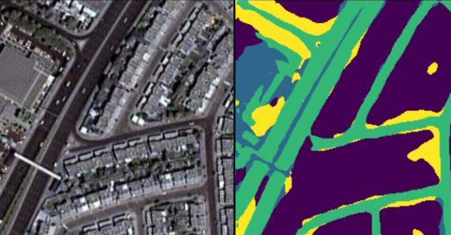

I'm a Master's student in the Erasmus Mundus IPCV program, currently at Universidad Autónoma de Madrid. The program takes me through Budapest, Madrid, and Bordeaux.
My research focuses on diffusion-based semantic segmentation — using attention maps from LoRA-finetuned Stable Diffusion to produce segmentation labels without manual annotation, applied to the Cityscapes dataset.
I graduated as Gold Medalist at NUST Pakistan, ranked 1st in a cohort of 120+, and interned at RPTU Kaiserslautern in Germany on large-scale wheat phenology estimation from UAV and satellite imagery.

Open to research collaborations, industry roles, and conversations about vision and learning.
Send an Email ↗